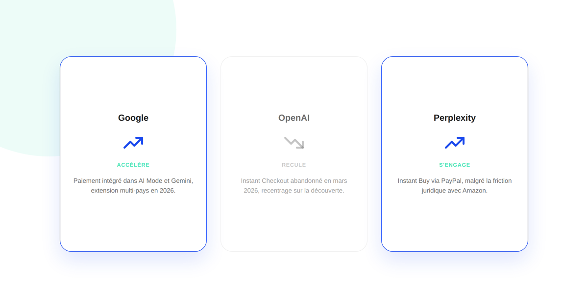
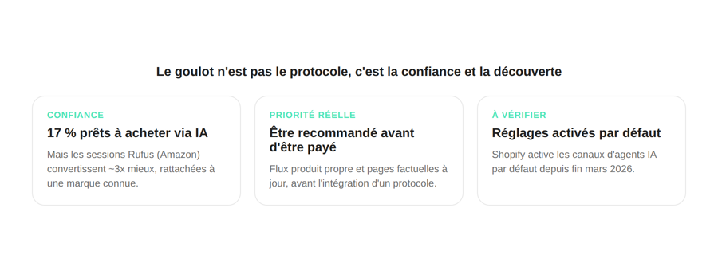

Achat direct dans ChatGPT, Perplexity, Google AI Mode : où en est l'agentic commerce
Acheter sans quitter une conversation avec une IA n'est plus un concept de conférence : Google y investit massivement, Perplexity en a fait un argument central, et OpenAI vient pourtant de faire marche arrière. Les trois plateformes ne racontent pas la même histoire — ce qui en dit long sur où se situe vraiment la priorité pour un e-commerçant.

L'idée de « commerce agentique » — un agent IA qui découvre, compare et achète un produit sans que l'utilisateur quitte la conversation — avance, mais de façon très inégale selon la plateforme. Les trois acteurs les plus en vue (Google, Perplexity, OpenAI) ont pris des trajectoires opposées en quelques mois, et cette divergence est elle-même la donnée la plus utile pour un e-commerçant qui se demande où investir son attention en premier.
Google mise sur le paiement intégré, et accélère
Google pousse le plus loin sur l'achat complet à l'intérieur de l'IA : les utilisateurs peuvent désormais acheter chez des marchands éligibles directement dans AI Mode et sur Gemini, via Google Pay (et à terme PayPal), sous son Universal Commerce Protocol (UCP). En mai 2026, Google a annoncé l'extension de ce paiement intégré au Canada et à l'Australie, puis au Royaume-Uni dans les mois suivants.
OpenAI a reculé, et s'est recentré sur la découverte
À l'inverse, OpenAI a effectivement abandonné en mars 2026 son Instant Checkout, la fonctionnalité phare de paiement intégré dans ChatGPT : seulement une trentaine de marchands étaient encore actifs six mois après son lancement. ChatGPT s'est depuis recentré sur la découverte produit, laissant la finalisation de l'achat aux sites marchands eux-mêmes. Un signal rapporté illustre l'écart : un responsable Walmart aurait indiqué que le taux de conversion des sessions menées directement dans ChatGPT tournait autour du tiers de celui observé sur Walmart.com.
Perplexity reste le plus engagé côté transaction
Perplexity a pris le chemin inverse d'OpenAI : son « Instant Buy », construit sur PayPal et lancé en novembre 2025, permet de découvrir, comparer, acheter et suivre la livraison d'un produit sans jamais sortir de l'interface de chat. Cette ambition a toutefois généré une friction juridique directe avec Amazon, qui a attaqué Perplexity au sujet de son agent Comet et a banni son agent d'achat de la plateforme — une décision que Perplexity conteste.

Le vrai goulot n'est pas le protocole, c'est la confiance
Au-delà des annonces de plateformes, le frein principal reste côté utilisateur : une étude relayée dans la presse spécialisée du secteur indique que seulement 17 % des consommateurs se disent prêts à faire confiance à une IA pour finaliser un achat. Dans le même temps, les sessions passées par l'assistant Rufus d'Amazon convertiraient environ trois fois mieux que les sessions classiques — ce qui suggère que la confiance progresse surtout quand l'agent reste rattaché à une marque déjà connue de l'acheteur, pas dans l'abstrait.
Ce qu'un e-commerçant doit vraiment préparer en premier
Avant de se soucier d'intégrer un protocole de paiement agentique, la priorité réaliste pour la plupart des sites français est d'être correctement recommandé par ces IA — ce qui dépend d'abord de la qualité du flux produit (prix, stock, caractéristiques exactes et à jour) et de pages produit factuelles, pas de l'intégration technique du paiement lui-même. Plusieurs analystes du secteur résument ce point en parlant d'un problème de découverte avant d'être un problème de transaction. À noter : Shopify a rendu les canaux d'agents (ChatGPT, Google AI Mode, Perplexity) disponibles depuis son panneau d'administration, activés par défaut depuis fin mars 2026 — un paramètre à vérifier si votre boutique est sur cette plateforme, dans un sens comme dans l'autre.
FAQ
Faut-il intégrer un protocole de paiement agentique dès maintenant ?
Pas dans l'urgence pour la majorité des e-commerçants français : ces protocoles sont encore jeunes, concentrés sur le marché américain, et la priorité réelle est d'abord d'être recommandé par ces IA (flux produit propre, informations fiables) avant de se soucier du paiement intégré lui-même.
Pourquoi OpenAI a-t-il reculé sur le paiement intégré alors que Google avance ?
Les sources disponibles ne donnent pas la raison officielle d'OpenAI. Le constat rapporté est factuel : peu de marchands actifs six mois après le lancement, et un repositionnement de ChatGPT vers la découverte produit plutôt que la transaction elle-même.
Comment un site e-commerce peut-il apparaître dans les recommandations de ces IA ?
En priorité par un flux produit propre et à jour (prix, stock, caractéristiques exactes) et par des pages produit riches en informations factuelles vérifiables — les mêmes bases que le référencement classique, avant même de considérer l'intégration d'un protocole de paiement.
Envie de préparer votre visibilité dans les IA avant vos concurrents ?
Pour aller plus loin, voir la page GEO, l'audit de visibilité IA, et l'article Growth B2B SaaS vs e-commerce.
Pour continuer sur ce sujet.